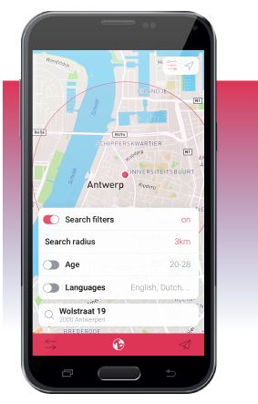

Semestr

Leaving home to go study abroad can be quite daunting, don't you agree?
It is not always easy to find other students with whom you can have a laugh, hang around and share your experiences when you are in a foreign country.
The same goes for finding the right places to go to, nice activities to do, or just some plain and simple practical information, like where to buy your books.
There is a solution out there for you
Semestr is here to help you out! Find other students during your time abroad, communicate with them, share valuable knowledge and stay on top of all practicalities involved.
Download the app and you will be meeting up with other exhange students in no time!